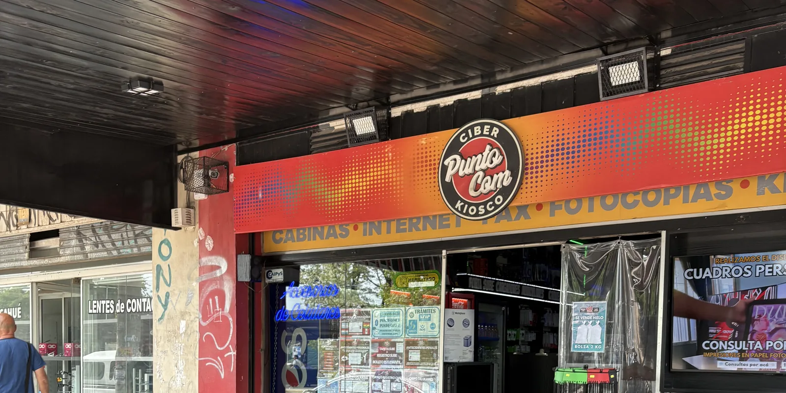
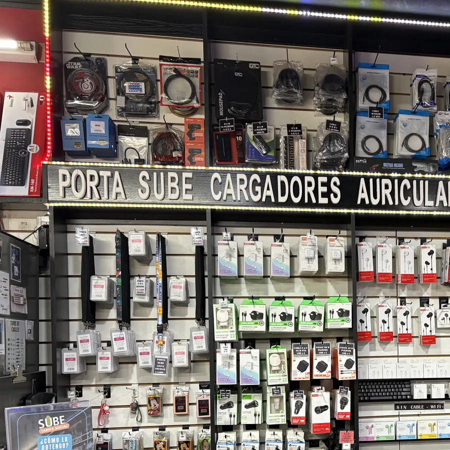
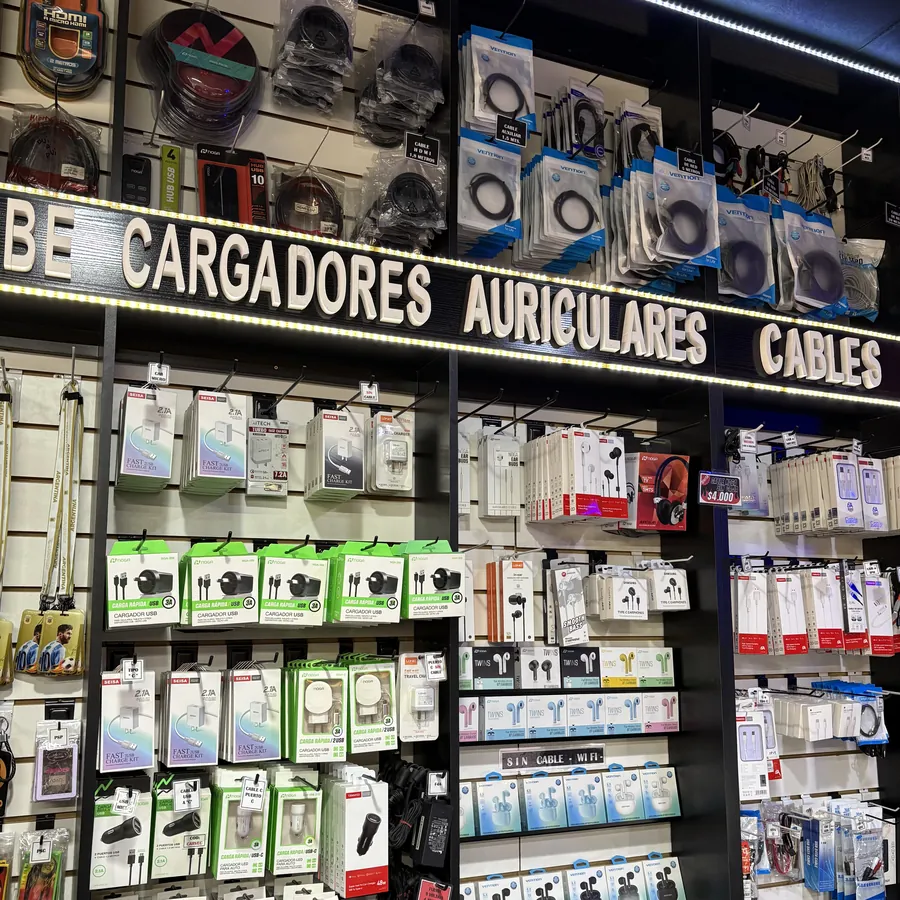
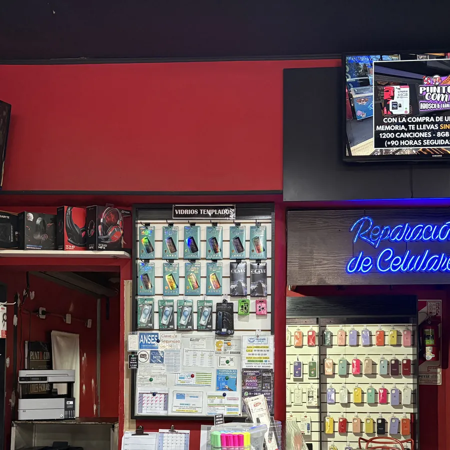
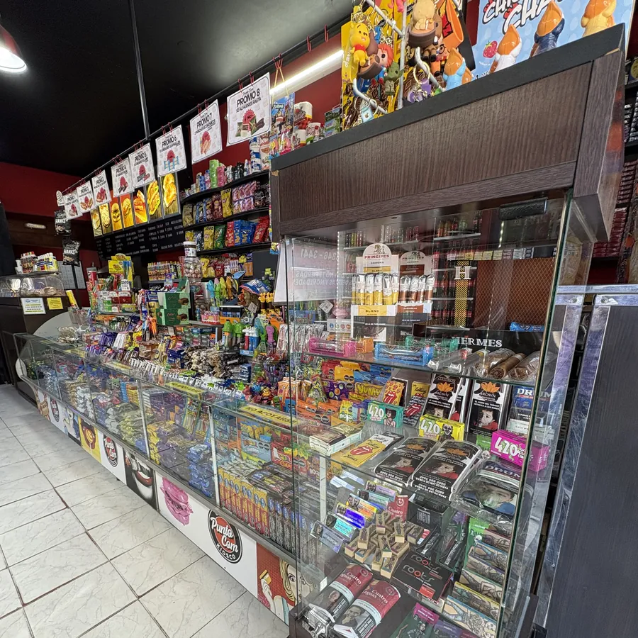
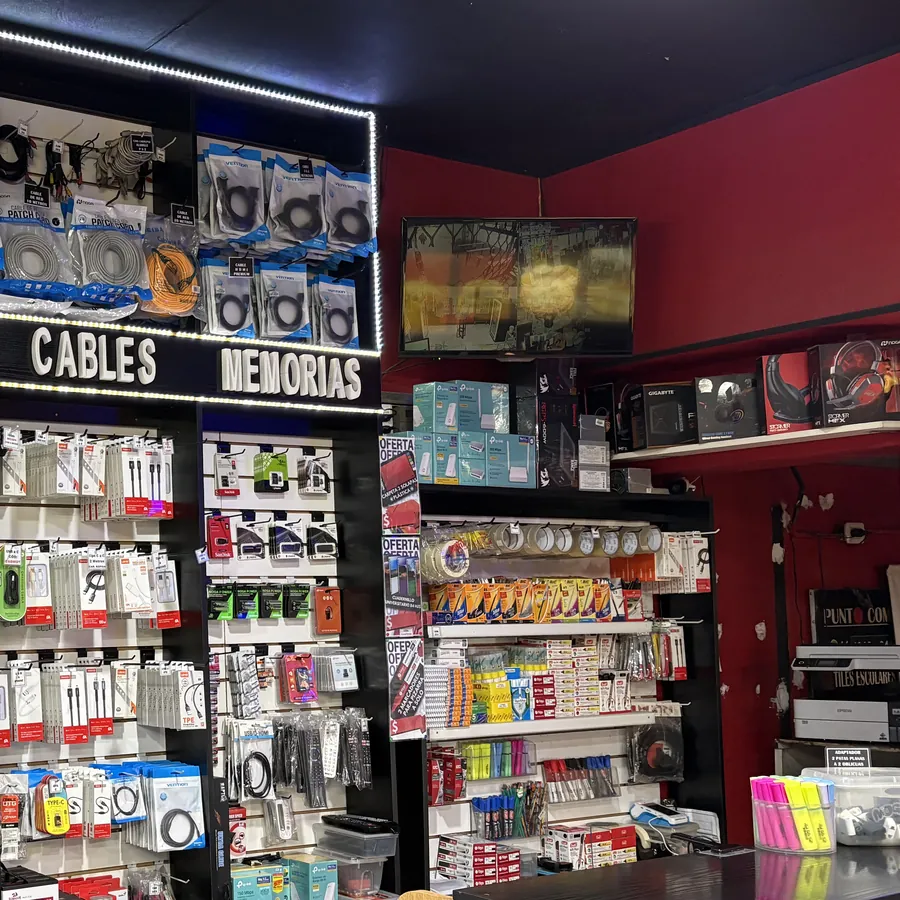

Ciber & Trámites · Servicios Profesionales
Tu centro de servicios de confianza. Gestionamos tus trámites online, brindamos soporte técnico y diseñamos tu marca — todo en un solo lugar.
Trabajamos con estas entidades y organismos
Conocé nuestro local

Mariano AcostaAv. Dr. Ricardo Balbín 9490 — Mariano Acosta, Partido de Merlo





Todos los servicios que necesitás, en un solo lugar
Seleccioná el organismo y conocé qué documentación necesitás traer
Administración Nacional de la Seguridad Social. Jubilaciones, pensiones, asignaciones, AUH, CUIL y más, sin hacer filas.
Código de identificación laboral, necesario para beneficios de seguridad social, trámites bancarios y muchos más. Lo generamos al instante.
Clave para ingresar a Mi ANSES y realizar cualquier trámite online. Puede obtenerse o recuperarse de forma digital.
Descarga, impresión y carga de formularios para distintos trámites de ANSES.
Consulta de estado, presentación de libreta AUH y cobro del 20% acumulado.
Revisión de montos, fechas de pago y estado de asignaciones desde Mi ANSES.
Seguimiento del estado de cualquier trámite en curso mediante número de expediente.
Cambio de cuenta bancaria o billetera virtual para jubilaciones, pensiones o asignaciones.
Actualización de datos personales, de contacto y grupo familiar en el sistema online de ANSES.
Obtención del CODEM para PAMI y otras entidades, y constancias de negativa de beneficio.
Agencia de Recaudación y Control Aduanero. Claves fiscales, sellados, facturas electrónicas, monotributo, domicilio electrónico y más.
Creación o recuperación de la clave fiscal para acceder a todos los servicios de ARCA.
Generación y pago de sellados provinciales para contratos, inmuebles y actos jurídicos.
Emisión de facturas A, B o C para autónomos, monotributistas y responsables inscriptos.
Inscripción o baja del Monotributo general. Incluye categorización, elección de obra social y todos los pasos del alta o baja.
Alta en Monotributo Social (vulnerabilidad social) y Promovido (primera inscripción con beneficios). Te asesoramos sobre cuál aplica en tu caso.
Constitución o actualización del domicilio electrónico ante ARCA, obligatorio para recibir notificaciones oficiales.
¿Necesitás la Clave de la Seguridad Social de ANSES? La gestionamos también validándola por ARCA — mirá el trámite en la pestaña ANSES.
Obra social para jubilados, pensionados y adultos mayores de 70 años. Afiliaciones, credenciales, cartillas y recupero de usuarios.
Afiliación definitiva para jubilados, pensionados y adultos mayores de 70 años sin obra social. Trámite 100% digital.
Descarga e impresión de la credencial provisoria con código QR, válida para turnos, medicamentos y trámites presenciales.
Búsqueda de médicos, centros de salud, farmacias y prestadores habilitados por PAMI en tu zona.
Solicitud, renovación o reimpresión de credenciales PAMI para titular o familiares a cargo.
Recuperación del acceso al portal o app de PAMI para trámites digitales.
Sistema Único de Boleto Electrónico. Venta de tarjetas, registros, Tarifa Social, boleto estudiantil, bajas y pase libre.
Adquisición de una nueva tarjeta SUBE directamente en el local, sin necesidad de ir a otro punto de venta.
Registro de la tarjeta SUBE a nombre del titular. Paso obligatorio previo para acceder a Tarifa Social y Boleto Estudiantil.
Denuncia y baja de la tarjeta SUBE para proteger el saldo y solicitar una nueva vinculada al mismo usuario.
Acceso al beneficio de descuento en transporte para jubilados, AUH, desempleados y personas en situación de vulnerabilidad.
Gestión del Boleto Estudiantil y descarga del carnet para estudiantes de nivel primario al universitario.
Impresión de foto 4x4 para el carnet y plastificado del documento en el local.
Gestión del Pase Libre de transporte interurbano para personas con discapacidad o adultos mayores habilitados.
Dirección Nacional de Migraciones. Residencias, certificaciones, rectificaciones de movimientos y turnos.
Consulta del estado del trámite de residencia y renovación digital cuando el certificado está próximo a vencer.
Inicio del trámite de residencia temporaria o permanente a través de RADEX, sin concurrir a una oficina para iniciar.
Certificado que acredita el estatus legal del extranjero, requerido en trámites laborales, bancarios y civiles.
Solicitud de corrección de errores en los registros de entradas y salidas del país ante la DNM.
Solicitud de turno online para trámites presenciales: DNI extranjeros, asesoramiento, menores, consultas, etc.
Plataforma digital del Estado Nacional. Alta, blanqueo de cuenta, suscripción de servicios, vehículos, licencias y otros trámites.
Creación del usuario en Mi Argentina para acceder a licencias digitales, documentos y servicios del Estado.
Recupero o blanqueo de acceso a Mi Argentina en caso de contraseña olvidada, cambio de celular o correo inaccesible.
Actualización de domicilio, correo, celular y datos de contacto en el perfil de Mi Argentina.
Alta y vinculación de servicios del Estado disponibles en la plataforma: salud, educación, documentos digitales y más.
Vinculación de vehículos y licencias de conducir al perfil digital de Mi Argentina para acceder a documentos oficiales digitales.
Asistencia con cualquier otro trámite disponible en la plataforma: consultas, descarga de certificados, gestiones varias.
Turnos, pagos, solicitud de beneficios, reprogramaciones, devoluciones y rectificación de datos vehiculares.
Reserva de turno para la verificación técnica obligatoria y pago online según terminación de patente y antigüedad.
Gestión del beneficio de exención o descuento para jubilados, discapacitados u otros grupos habilitados.
Cambio de fecha y horario del turno de VTV ya reservado, dentro de los plazos permitidos.
Gestión del reembolso del pago de turno VTV en caso de cancelación, error u otras causas habilitadas.
Corrección de datos erróneos del vehículo o titular en el sistema de VTV (patente, domicilio, correo, nombre, etc.).
Verificación policial provincial y nacional. Turnos, pagos, reservas, Formulario 12, creación de correo y modificaciones.
Solicitud de turno online para la verificación policial del vehículo (provincial o nacional).
Gestión del pago y reserva del turno. Generamos la boleta y te asesoramos para abonarlo.
Descarga y/o impresión del Formulario 12 (constancia de verificación policial aprobada), requerido para transferencias y trámites de dominio.
Creación de cuenta de correo electrónico para recibir el Formulario 12 y documentos de la verificación, para quienes no cuentan con una casilla activa.
Cancelación o reprogramación del turno de verificación policial dentro de los plazos habilitados.
Transferencias, grabados, informes de dominio, consulta e infracciones, turnos y descarga de documentación vehicular.
Inicio y seguimiento del trámite de transferencia de dominio vehicular (compra-venta) a través del sistema online.
Solicitud de turno online para asesoramiento presencial en el Registro Automotor.
Gestión de turnos para trámites específicos y descarga de documentación oficial del Registro Automotor.
Gestión de planes de pago, descuentos, reducción o quita de multas según los programas vigentes.
Consulta online de infracciones en CABA y Provincia de Buenos Aires, y generación del certificado de libre deuda vehicular.
Informe que detalla deudas, prendas, inhibiciones o problemas legales del vehículo. Fundamental antes de comprar un auto usado.
Solicitud de turno para el grabado de autopartes requerido en transferencias y altas de dominio.
Inicio digital del trámite de retiro de vehículo 0 km desde la concesionaria y gestión del alta de dominio.
Certificados de antecedentes penales nacionales, provinciales (Bonaerense) y de la Policía Federal Argentina.
Certificado ante el Registro Nacional de Reincidencia para empleo, migraciones y trámites oficiales.
Certificado de antecedentes de la Policía de la Provincia de Buenos Aires para trámites laborales y administrativos.
Certificado de la Policía Federal para empleos en seguridad, migraciones u organismos federales.
Certificado de antecedentes personales provincial para trámites civiles y administrativos bonaerenses.
Gestión completa de informes crediticios: solicitud, cancelación de deudas e informes para terceros.
Obtención del informe Veraz (1 gratuito por año, o adicionales con costo) con el historial crediticio y deudas registradas.
Gestión para solicitar la cancelación o actualización de deudas incorrectas o ya saldadas que figuren en el informe.
Solicitud de informe crediticio de un tercero con autorización del titular o como empresa habilitada.
Plataforma del Estado para trámites remotos: matriculaciones, partidas, apostillados, legalizaciones y trámites complejos.
Inicio digital de rectificaciones de partidas de nacimiento, defunción o casamiento a través de la plataforma TAD.
Inicio de trámites de matriculación o habilitación profesional ante colegios y organismos a través de TAD.
Solicitud de partidas de nacimiento, casamiento y defunción de registros civiles provinciales y nacionales vía TAD.
Gestión digital del apostillado (Convención de La Haya) y legalizaciones para documentos públicos con validez internacional.
Asistencia con cualquier otro trámite de la plataforma TAD: habilitaciones, registros, solicitudes especiales.
Turnos para DNI, pasaporte, matrimonio, denuncias por extravío y otras gestiones presenciales en el Registro Civil.
Turno online para tramitar el DNI por primera vez, renovación, actualización de datos o duplicado por extravío.
Turno online para tramitar el pasaporte argentino por primera vez o renovarlo en el Registro Civil o delegación habilitada.
Confección e impresión de la declaración jurada de domicilio para trámites civiles y registrales.
Asistencia para gestionar la denuncia por extravío de DNI, pasaporte u otros documentos personales.
Gestión del turno online para iniciar el trámite de matrimonio civil ante el Registro Civil correspondiente.
Solicitud de turnos para cualquier trámite presencial ante el Registro Civil Provincial: nacimientos, adopciones, cambios de nombre, inscripciones, etc.
Turnos, boletas, ampliaciones, renovaciones, primera licencia y asesoramiento completo.
Solicitud de turno online para tramitar la licencia en Merlo, Mariano Acosta y otros municipios del conurbano bonaerense.
Descarga e impresión de las boletas de pago para el trámite de licencia según el municipio y categoría.
Gestión completa del turno y documentación para obtener la primera licencia (categoría B – autos).
Gestión del turno y documentación para renovar la licencia vencida o próxima a vencer.
Trámite para agregar categorías a la licencia existente: motos, camiones, transporte de pasajeros y otras.
Consulta y orientación personalizada sobre requisitos, pasos y documentación para cualquier trámite de licencia en tu municipio.
Más allá de los trámites — somos tu local de confianza para todo
Servicio técnico profesional para computadoras de escritorio y laptops de todas las marcas.
Reparación y diagnóstico de smartphones. Trabajamos con Android e iOS de todas las marcas.
Identidad visual profesional para tu emprendimiento, negocio o evento.
Todo lo que necesitás imprimir, escanear, digitalizar o enviar.
Ayuda con cualquier trámite digital cotidiano, desde facturas hasta servicios online.
Gestión de pagos y cargas de saldo en plataformas y servicios online.
Presencia digital profesional y a medida para destacar y potenciar tu negocio en internet.
Estrategias de marketing digital enfocadas en atraer a tu cliente ideal y multiplicar tus ventas.
Más de 25 años acompañando a la comunidad de Mariano Acosta
Más de 25 años brindando soluciones
Atención rápida y personalizada
Asesoramiento en cada trámite
Amplia variedad de servicios en un solo lugar
Compromiso con la calidad y la satisfacción del cliente
Reseñas reales de Google, sin filtrar
4.1 · 14 opiniones en Google"Siempre muy buena atención y brindan servicios que te facilitan tus trámites. 10/10 el mejor kiosco."
"Excelente atención y gestión de trámites. ¡Recomiendo!"
"Muy amables y predispuestos los empleados, se tramitan pagos por Internet. Muy buen servicio."
"Excelente calidad de atención. Pagos y cargas virtuales, impresiones, cibercafé, kiosco y minilibrería."
"Gran atención y asesoramiento."
"Buena atención."
Estamos en Mariano Acosta, Partido de Merlo — escribinos o vení a vernos
Av. Dr. Ricardo Balbín 9490, Mariano Acosta, Partido de Merlo, Buenos Aires